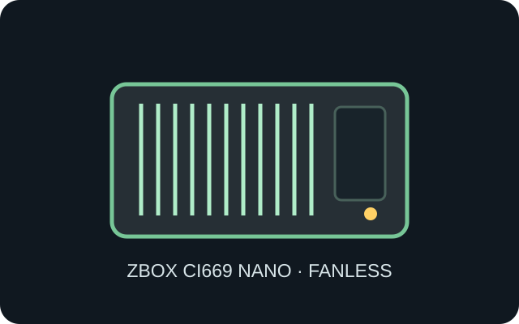

[ IDENTIFIED BAREBONE // PASSIVE MINI PC ]
ZOTAC ZBOX CI669 nano
204 × 129 × 68 mm (L × W × H), about 1.8 L, fanless mini-PC barebone; verify board and feature differences against the CI649/CI629 family.

MODEL TYPE: ZBOX CI669 nano barebone, 13th Gen Intel Core system; not a generic passive case or fanless CI-series cross-fit.
Specifications & fit
| Dimensions / type | 204 × 129 × 68 mm (L × W × H), approximately 1.8 L fanless enclosure. |
|---|---|
| Board / power | Proprietary ZOTAC system board; external 20 V, 65 W adapter. The processor, heat spreader and chassis cooling surfaces are designed as one passive thermal system. |
| Drive bays | One M.2 2230/2242 NVMe storage socket and one 2.5-inch SATA drive position; check accessory tray and internal clearance before fitting a drive. |
| Expansion | No PCIe card slot. Two SO-DIMM sockets, M.2 wireless and M.2 storage positions are internal upgrades; VESA mounting hardware is an external placement accessory. |
| Thermal / maintenance compatibility | Fanless thermal fins need unobstructed exposure and periodic dust removal. Do not cover top/side surfaces or enclose tightly; disconnect the 20 V adapter and avoid bending the heat spreader or antenna leads during service. |
Compatibility & preservation notes
The CI669 nano’s passive case is a critical heatsink, not a cosmetic shell. Preserve contact pads, screws and the original thermal interface in their documented order; service by a technician familiar with compact heat-spreader assemblies.
- Use the documented 65 W supply and matching barrel connector; do not substitute a similarly sized DC plug.
- Keep the VESA plate clear of fin surfaces and inspect the case for dents that could impair thermal contact.
Manufacturer specifications & manuals
- ZOTAC — ZBOX CI669 nano barebone product pageManufacturer model specification and configuration reference.
- ZOTAC — ZBOX CI669 nano brochureManufacturer datasheet with physical and hardware specifications.